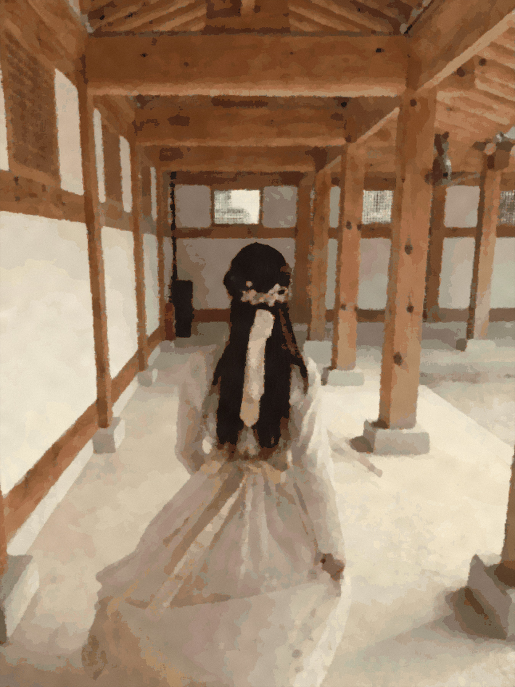
A QUIET PORTRAIT暖风
東
暖风
向东
她的十四个片段

她的十四个片段
脸被轻轻淡去，
她仍留在整幅画里。
十四张完整画面。
头、发型、姿势与衣着都在，
五官只留下很轻的线。
有时认出一个人，
先认出的并不是五官。
是她站立的姿势，
长发的轮廓，衣袖的颜色，
以及身后那天的光。
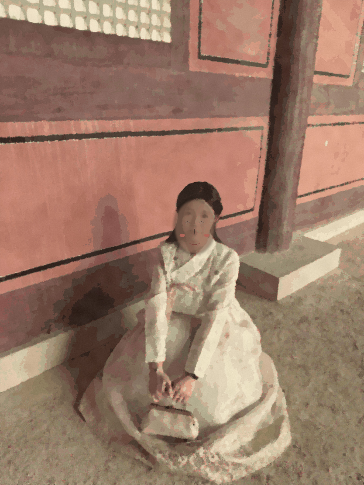
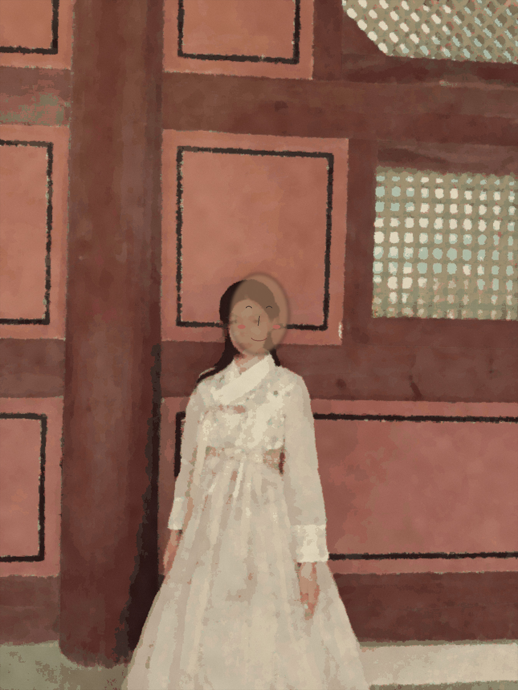
同一面朱墙，
两种安静。
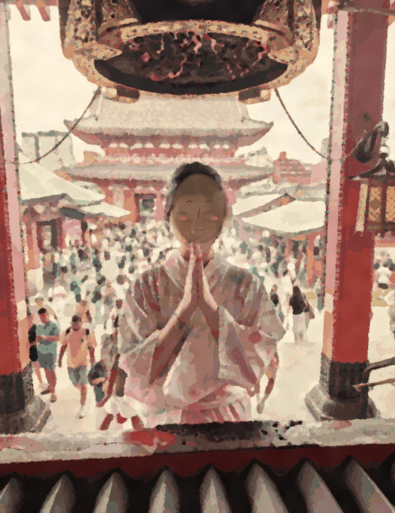
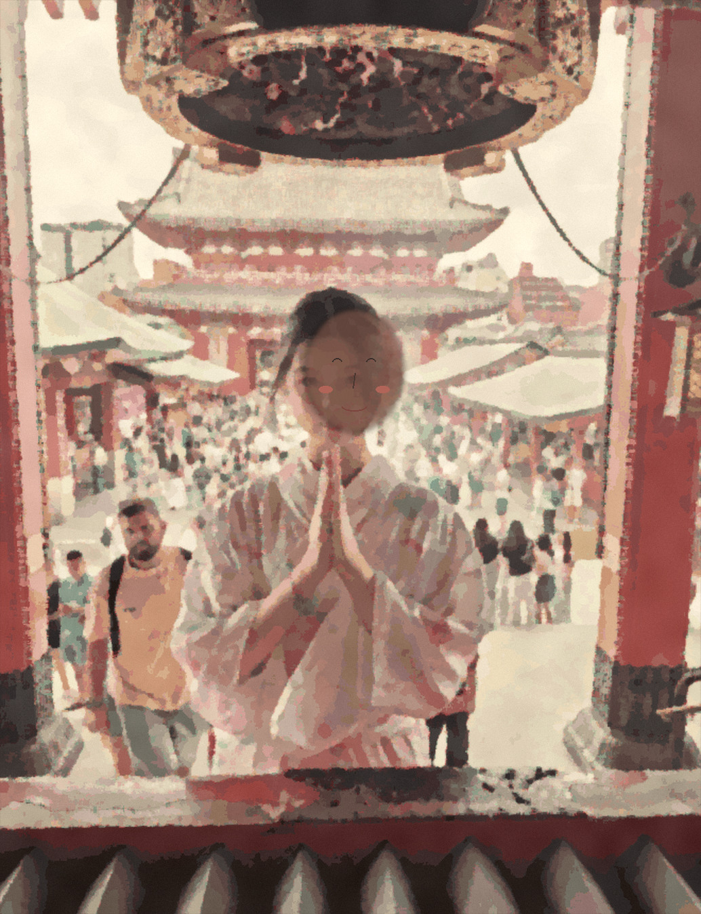
愿望没有说出口，
双手替她记住。
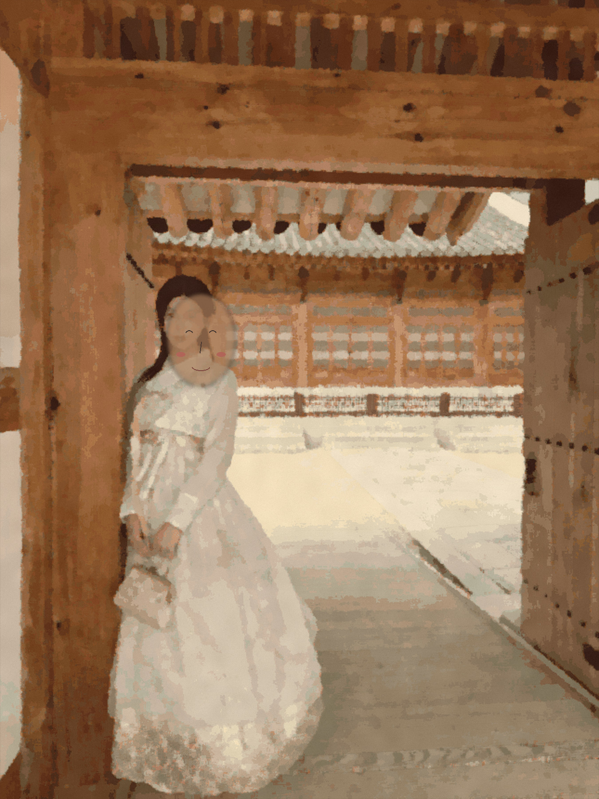
只看轮廓，
也知道是她。
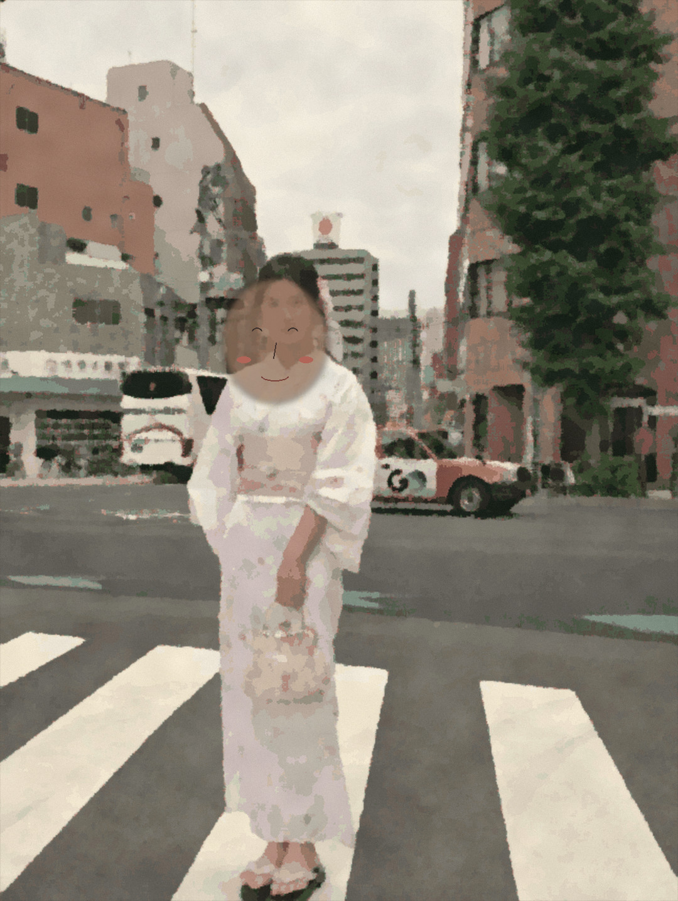
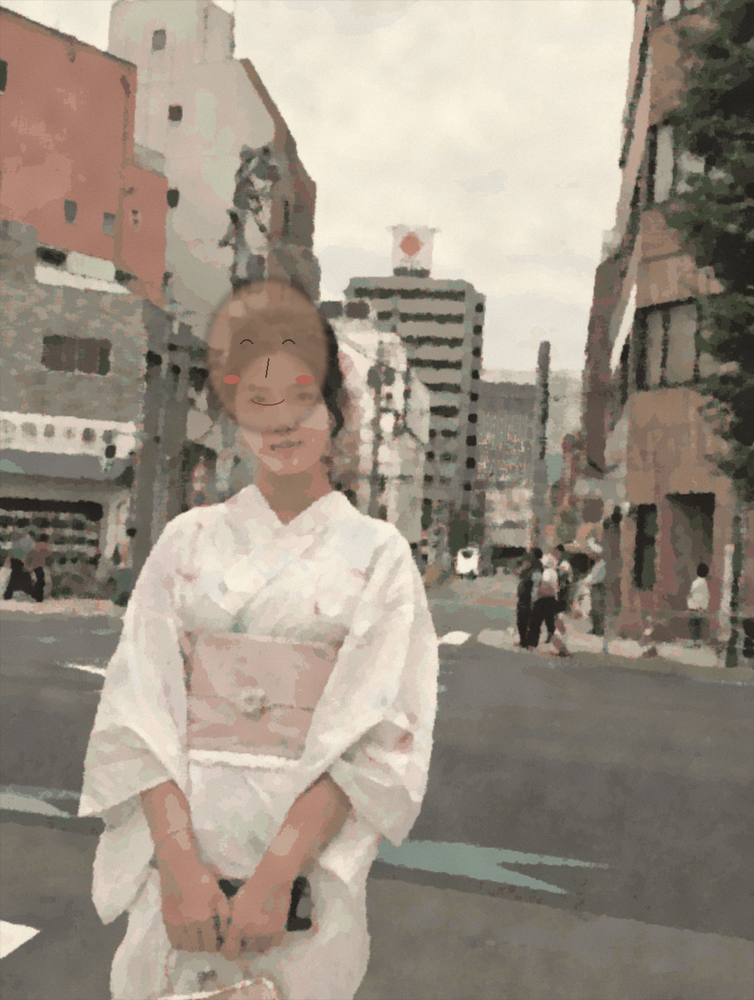
花色很轻，
城市的线条很直。
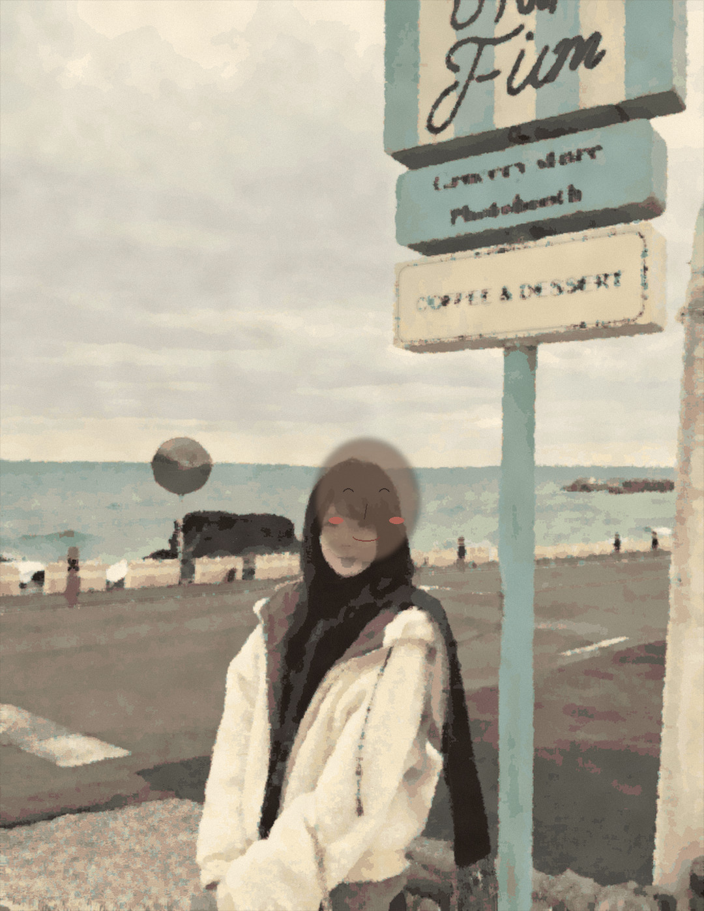
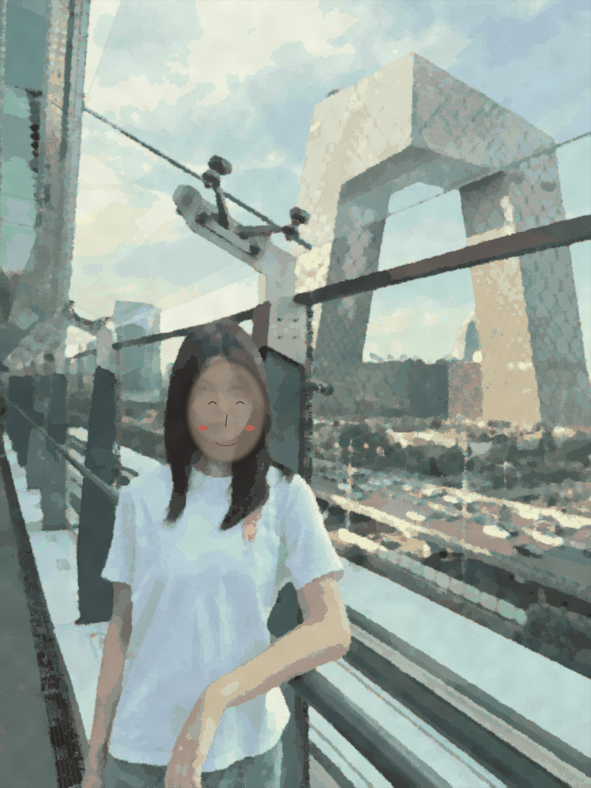
海的尽头，
接着另一座城。
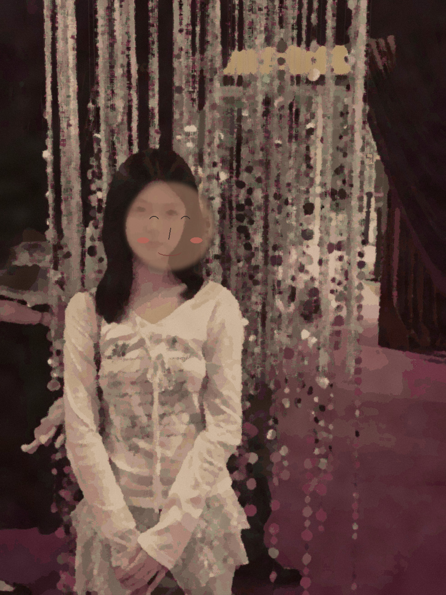
近一点，
仍然不必画得很满。
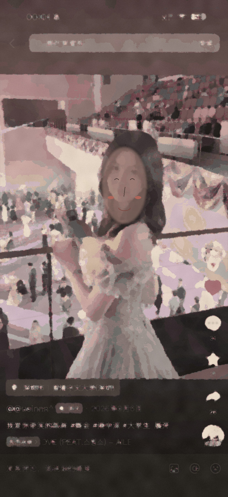
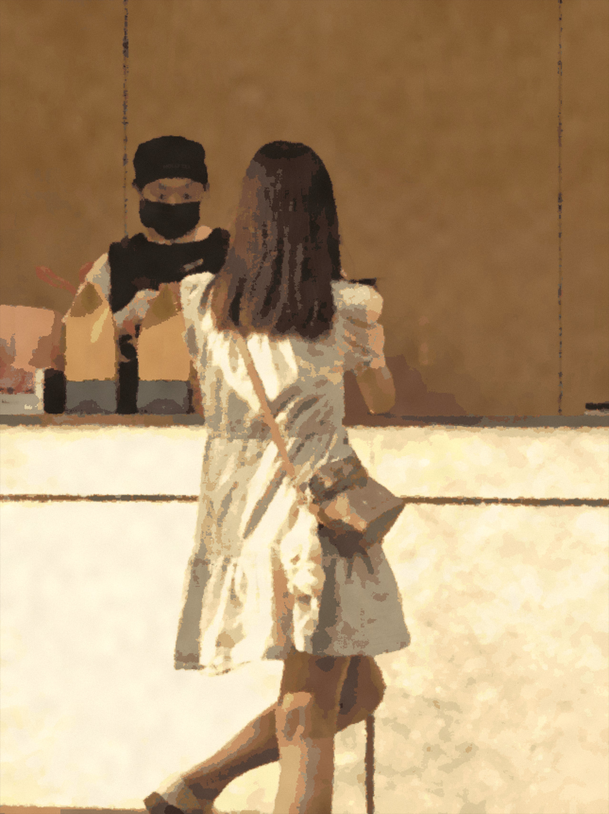
最后，
把灯光带走。
十四张照片的纸本绘本重述
WARM PAPER EDITION · 2026衣袖、背影、姿势与风景
都是她。